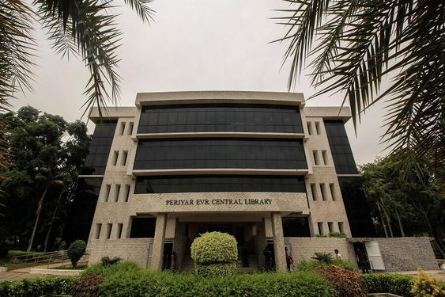

PERIYAR EVR CENTRAL LIBRARY

Library
The Central library spreads over an area of 7770 sq m with
six floors (Excluding ground floor). It has specialized collections of books,
journals & other resources in Mathematics & Sciences, Engineering and Technology,
Biotechnology, Humanities, Social Sciences and Management ranging from printed books,
e-books, back volumes and CDs\DVDs.
The Central Library subscribes to national and
international journals in print and e-Journals. The library has a video conferencing
facility and NPTEL video courses, ePGpathashala, Swayam Programme and other E-Learning
resources initiated by the Government of India. Central Library is using Koha software
for Library automation and has implemented RFID technology with self-issue and return kiosk,
WEB-OPAC (Online Public Access Catalogue), and online renewal facility.